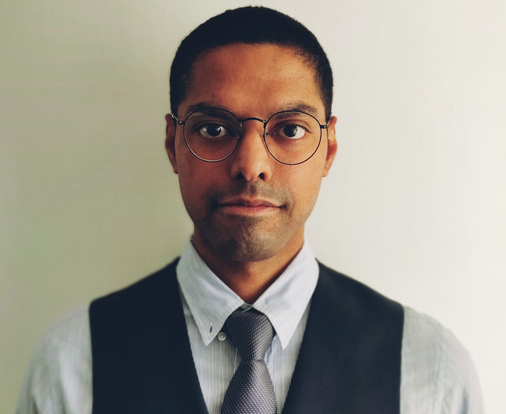

Ashish Singh | Aspiring Web Developer | Management Consultant | Financial Analyst
Contact Details
LinkedIn
Skills & Hobbies
Summary
Analytical mind and never ending curiosity with a new found passion for coding. 6+ year of experience in Corporate Finance/Strategy domain where i enjoyed synthesizing information to develop insights that provide sustainable growth
Education
EDHEC School of Business| Nice, France
Masters in Management - Financial Economics
Masters in Science - Corporate Finance & Banking
(2014-2017)
Maharaja Surajmal Institute
Bachelors in Business Administration
(2010-2013)
CFA Institute
Chartered Financial Analyst- Level 1 Cleared
Work Experience
Transjovan Capital Advisors LLP (Strategic Alliance, Deloitte US)
Delhi, India
Associate - Strategy and M&A Consulting
December 2021 - January 2024
Executive decision Support
- Managed project scopes, timelines, and deliverables for key clients, ensuring stakeholder alignment
- Assisted a cross-functional team in market analysis for a global consumer electronics firm in the Lithium-Ion battery sector
Project Management & Client Engagement
- Led a team on a commercial due diligence project for a construction company's acquisition of a Network as a Service (NaaS) entity.
- Devised market entry strategies for a major Japanese private aerospace client in the USA, emphasizing customer and competitive analysis and acquisition targeting
- Oversaw market sizing and competitive analysis for 1) U.S. filtration company, 2) North American TMT firm in cybersecurity, facilitating strategic transitions and identifying growth opportunities
Team Leadership & Firm Development
- Led teams in hypothesis-driven analysis, delivering insights and strategic recommendations to C-suite executives
- Authored white papers and thought leadership pieces on emerging technologies and trends, including Battery Technology, Digital Twin, and Future of Mobility
Talent Acquisition & Process Optimization
- Streamlined the interview process, assessing candidates up to Engagement Manager level, enhancing recruitment efficiency and effectiveness
AXA Investment Managers
Paris, France
Reporting Officer - Business Intelligence
June 2019 - Feb 2021
- Executed financial analysis & reporting for over €800 billion AUM and €120 Million in revenue
- Generated and analyzed income Statement and balance sheets and presented the results via monthly business review & dashboards to assist the upper management to make economic decision
- Developed pro-forma, variance and ad-hoc analysis, annual operating plan budgets and revenue forecasts
Nell'Armonia
(acquired by Oracle)
Consultant - Financial Reporting
June 2018 - November 2018
- Led year-end financial consolidation at a Japanese cosmetic giant and streamlined account tracking at Malakoff Mederic. Developed financial management forms in Oracle's FCCS and upskilled in Hyperion, aiding team transitions and client onboarding